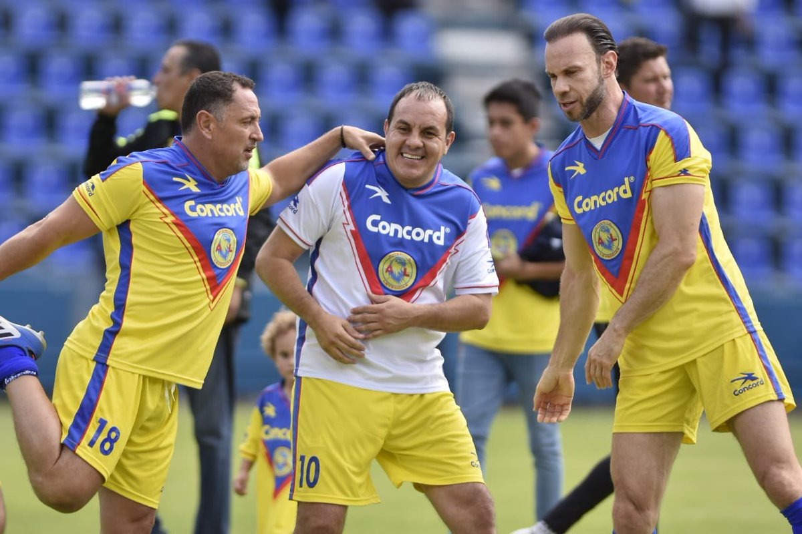
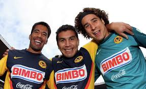
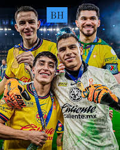

jugadores
- Los jugadores históricos del Club América incluyen leyendas como Cuauhtémoc Blanco, Carlos Reinoso, Alfredo Tena, Zague, Guillermo Ochoa y Salvador Cabañas, figuras clave en diferentes épocas que destacaron por su talento, goles y liderazgo, desde los inicios del club hasta la era moderna.


Los jugadores actuales considerados históricos o referentes modernos del Club América incluyen principalmente al delantero Henry Martín, el mediocampista Álvaro Fidalgo y el portero Luis Ángel Malagón, piezas claves en el tricampeonato (2023-2024). Otros elementos relevantes en el plantel actual son Alejandro Zendejas.
Henry Martín: Capitán, goleador histórico del club y pieza inamovible en los títulos recientes.
Álvaro Fidalgo: Mediocampista creativo (el "Maguito") que ha marcado época desde 2021 por su regularidad y visión de juego.
Luis Ángel Malagón: Portero titular que se ha consolidado con múltiples títulos y un rendimiento superior.
Alejandro Zendejas: Extremo clave en el ataque americanista.
Estos jugadores son considerados parte de una nueva era de leyendas tras el éxito del tricampeonato.
